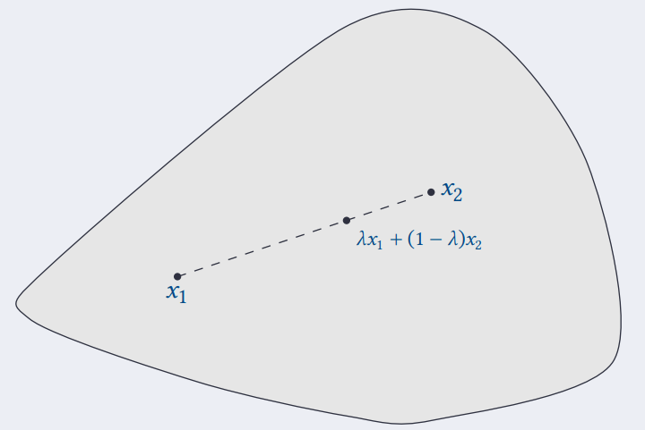
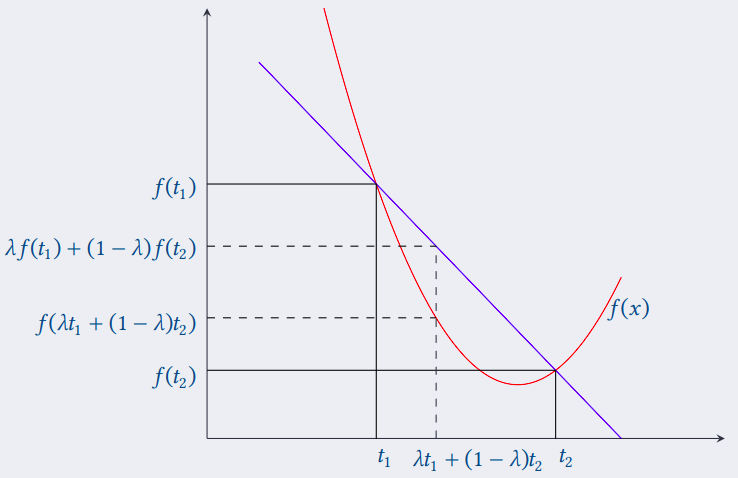
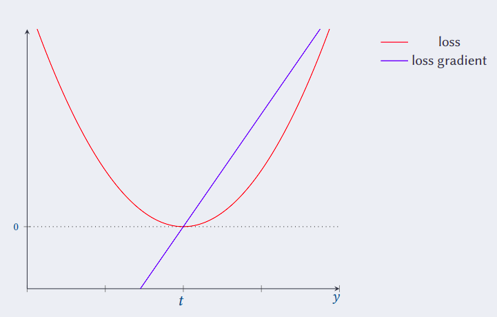
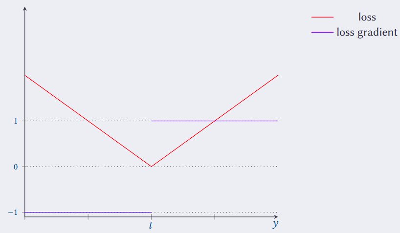
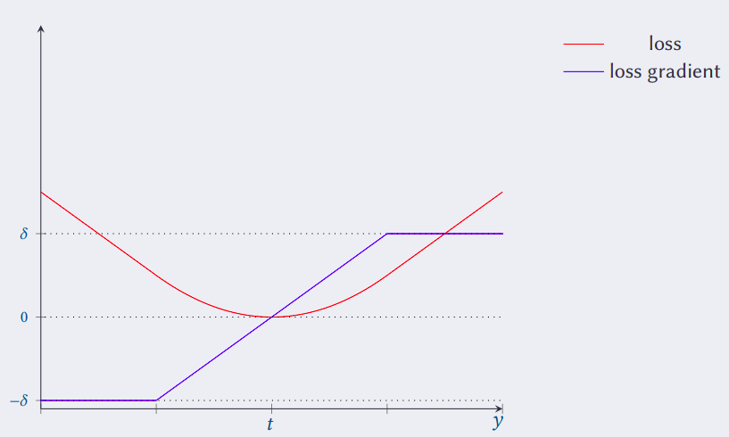
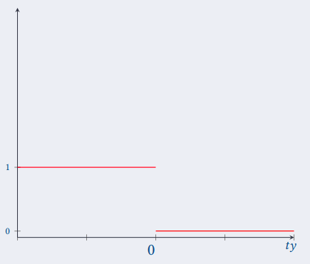

ML - Lesson 05
Loss e Training
Richiamando quanto visto nella lezione 3, la funzione loss \(L : \mathscr{Y} \times \mathscr{Y} \to \mathbb{R}\) misura per ogni coppia di valori target \(y_1, y_2\) il costo o errore di \(y_2\) rispetto a \(y_1\). Nel nostro caso, nell'apprendimento supervisionato si cerca di misurare la qualità di un predittore \(h\) tramite una funzione di rischio \(\mathscr{R}\), ponendola semplicemente pari alla funzione di loss \[ \mathscr{R}(h(x), t) = L(h(x), t) \]
Purtroppo normalmente non abbiamo un a disposizione l'intera relazione tra ogni elemento \(x\) e i rispettivi traget \(t\).
In realtà abbiamo questa relazione solamente per un dato sottoinsieme, il training set \(\mathscr{T} \subseteq \mathscr{X} \times \mathscr{Y}\).
Perciò, ciò che si fa è calcolare il cosidetto rischio empirico
\[
\overline{\mathscr{R}}_{\mathscr{T}}(h) = \frac{1}{\vert \mathscr{T} \vert} \sum_{(x,t) \in \mathscr{T}} L(h(x), t)
\]
Ciò provvede a una misura di qualità di un predittore \(h\) rispetto ai dati in possesso.
Perciò il problema dell'apprendimento automatico si riduce alla ricerca di una funzione \(h\) in uno spazio di funzioni \(\mathscr{H}\),
la quale minimizza la funzione di rischio empirico rispetto al dato training set.
Dato che \(\mathscr{H}\) potrebbe essere uno spazio troppo grande da esplorare, in genere si riduce \(\mathscr{H}\) a una famiglia più piccola di funzioni, possibilmente caratterizzate da un vettore di parametri \(\theta \in \mathbb{R}^d\). A questo punto la ricerca si riduce alla ricerca di parametri che fanno in modo che la funzione \(h_{\theta}\) minimizza la funzione loss. \[ \overline{\mathscr{R}}_{\mathscr{T}}(h_{\theta}) = \frac{1}{\vert \mathscr{T} \vert} \sum_{(x,t) \in \mathscr{T}} L(h_{\theta}(x), t) \]
Per pulizia di notazione, poniamo \(\vert \mathscr{T} \vert = n\) e consideriamo il vettore di parametri \(\theta\) che minimizza la somma
\[
\sum_{i = 1}^{n} L(h_{\theta}(x_i), t_i)
\]
tanto è equivalente.
Dopodiché poniamo tutto in funzione del solo \(\theta\), definendo la famiglia di funzioni \[ L_i(\theta) = L(h_{\theta}(x_i), t_i) \]
Perciò possiamo dire (in maniera più pulita) che vogliamo trovare il punto \(\theta\) che minimizza la funzione
\[
\mathscr{L}(\theta, \mathscr{T}) = \sum_{i = 1}^{n} L_i(\theta)
\]
Ovvero abbiamo riscritto la funzione di rischio empirico come una nuova funzione di loss \(\mathscr{L}\) rispetto al solo parametro \(\theta\),
la quale a sua volta è la somma delle \(n\) funzioni di loss \(L_i(\theta)\).
In breve
\[
\overline{\mathscr{R}}_{\mathscr{T}}(h_{\theta}) =
\frac{1}{\vert \mathscr{T} \vert} \sum_{(x,t) \in \mathscr{T}} L(h_{\theta}(x), t)
\propto \sum_{i = 1}^{n} L_i(\theta)
\]
Abbiamo visto che gli approcci analitici alla ricerca di punti di minimo globale, come per esempio trovare quando il gradiente si annulla, hanno delle serie problematiche. Infatti, quando il gradiente si annulla in:
- punti di minimo locale (e non globale).
- in punti di sella.
- punti di flesso.
Perciò abbiamovisto che una soluzione migliore è quella di approcciare il problema tramite metodi numerici, come per esempio con la discesa del gradinte. Alcune problematiche di questo approccio sono:
- ci consente di trovare punti di minimo locale, i quali dipendono dal punto in cui partiamo con la ricerca.
- il calcolo dei gradienti ad ogni passo potrebbe essere dispendioso se il training set è molto grande.
- potrebbe convergere troppo lentamente.
- la funzione potrebbe non essere derivabile in tutti punti.
Perciò l'approccio che generalmente si sfrutta, è quello di scegleiere adeguatamente la funzione di loss \(\mathscr{L}\) in modo tale che:
- ha un solo punto di minimo.
- oppure ha molteplici punti di minimo, che però approssimano abbastanza bene quello globale.
- sia derivabile in tutti i punti.
- non abbia punti di sella o di flesso.
- sia facile calcolare il gradiente.
Funzioni convesse
Un insieme di punti \(S \subset R^d\) si dice convesso se e solo se per ogni coppia di punti \(x_1, x_2 \in S\) e per ogni \(\lambda \in (0,1)\), avremo che \[ \lambda x_1 + (1 - \lambda)x_2 \in S \]

Figura 1: Insieme convesso
Allo stesso modo, una funzione \(f\) è convessa se e solo se l'insieme di punti posti al di sopra della funzione è convesso, ovvero \[ f(\lambda x_1 + (1 - \lambda)x_2) \leq \lambda f(x_1) + (1 - \lambda)f(x_2) \]

Figura 2: Funzione convessa.
Cerchiamo di capire perché dovremmo interessarci alle funzioni convesse.
Dalla teroe è noto che se una funzione \(f\) è convessa, allora ogni minimo glovale di \(f\) è anche un minimo globale.
Ancor più importante, se una funzione \(f\) è strettamente convessa, ovvero
f(λ x1 + (1 - λ)x2) < λ f(x1) + (1 - λ)f(x2)
allora esiste un unico minimo locale, il quale è anche un minimo globale.
Perciò, se ponessimo la funzione \(\mathscr{L}\) in maniera che risulti convessa (o anche strettamente convessa) basterebbe calcolare il punto \(\theta\) (o unico nel caso di strettamente convessa) in cui il gradiente si annulla \[ \nabla_{\theta} \mathscr{L}(\theta, \mathscr{T}) = 0 \]
Purtroppo, essendo \(\mathscr{L}\) una funzione composta da una somma di altre funzioni, potrebbe non essere facile trovarne una convessa. In questo caso ci viene in aiuto un altro risultato teorica importante:
La combinzione lineare di funzioni convesse (o strettamente convesse) è ancora una funzione convessa (o strettamente convessa).
Perciò non è necessario cercare un \(\mathscr{L}\) convessa, ci basterà invece che \(L_i(\theta)\) sia convessa, in quanto
\[
\mathscr{L}(\theta, \mathscr{T}) = \sum_{i = 1}^{n} L_i(\theta)
\]
Perciò se \(L_i\) è una famiglia di funzioni convesse, allora anche \(\mathscr{L}\) risulterà convessa.
Quadratic Loss
Un primo esempio semplice di funzione convessa è una funzione quadratica. Perciò possiamo considerare una funzione loss del tipo \[ L(y, t) = (y - t)^2 \] Questa funzione è detta quadratic loss.

Figura 3: Quadratic loss.
Avremo quindi che la funzione
\[
\mathscr{L}(\theta, \mathscr{T}) = \sum_{i = 1}^{n} (h_{\theta}(x_i) - t_i)^2
\]
risulta ancora essere una funzione convessa.
Osservando la figura 3 possiamo osservare che questa funzione da troppa rilevanza a valori anomali, ovvero la misura di errore di una predizione \(y\) rispetto al valore ottimo \(t\) cresce troppo velocemente (in modo quadratico appunto).
Absolute Loss
Un'altra funzione convessa è la cosiddetta absolute loss. \[ L(y,t) = \vert t-y \vert \]

Figura 4: Absolute loss.
Il vantaggio di tale funzione è che l'errore cresce in maniera lineare rispetto alla differenza tra \(t\) ed \(h(x)\), inoltre la derivata è facile da calcolare (è una costante).
Un problema non indifferente è che esiste un punto non derivabile, quello minimo. Purtroppo è necessario calcolare la derivata nel punto minimo durante la tecnica della discesa del gradiente, in quanto ci consente di stabilire quando terminare la procedura. Quindi non potendolo calcolare, non possiamo stabilire quando terminare il gradient descent.
Huber Loss
Un buon compromesso è otteunto tramite la cosiddetta funzione huber loss, definita come segue \[ L(y,t) = \begin{cases} \frac12 (t - y)^2 &\vert t-y \vert \leq \delta\\ \delta \left( \vert t - y \vert - \frac{\delta}{2} \right) &\vert t-y \vert > \delta \end{cases} \]

Figura 5: Huber loss.
Tale funzione assume un andamento quadratico in un interno \(\delta\) di \(t\), e uno lineare al di fuori.
0/1 Loss.
Consideriamo un classico problema di classificazione binaria, in cui vogliamo l'insieme dei valori delle predizioni è \(\{ -1, 1 \}\).
Una funzione loss abbastanza naturale è quella che assegna 1 se \(y\) e \(t\) sono differenti, e 0 se sono uguali.
\[
L(y,t) = \begin{cases}
1 &\text{sgn}(t) \neq y\\
0 &\text{sgn}(t) = y
\end{cases}
\]
dove la funzione \(\text{sgn}(x)\) vale 1 se \(x > 1\), e 0 altrimenti per ogni \(x \in \mathbb{R}\).
Tale funzione può essere anche vista come la v.a.
\[
\mathbf{1} \left[ ty < 0 \right]
\]
che vale 1 se il prodotto \(ty < 0\), ovvero \(t\) e \(y\) sono differenti, e vale 0 se sono uguali.
Questa funzione è nota come 0/1 loss function.

Figura 6: 0/1 loss.
In questo caso avremo che la valutazione \(\mathscr{L}(\theta, \mathscr{T})\) è pari alla somma di tutte le valutazioni errate che fa il predittore \(h_{\theta}\) sui dati del training set \(\mathscr{T}\).
Le problematiche di questa funzioni sono che:
- la funzione non è convessa.
- la funzione non è smooth (ovvero la derivata non è sempre definita).
- la derivata è sempre nulla, perciò non posso applicare il gradient descent.
- se il predittore \(h_{\theta}\) è una funzione lineare, ovvero \(h_{\theta}(x) = \theta_0 + \theta_1 x_1 + ... + \theta_d x_d\), allora è noto che trovare il valore di \(\theta\) che minimzza la somma degli errori è un problema NP-hard!
Una idea è quindi quella di trovare una funzione simile alla 0/1, che preservi però tutte le proprietà a noi utili.
Queste funzioni sono dette funzioni surrogate.
Una funzione surrogata approssima la 0/1 loss sempre dall'alto, e che risulta essere convessa e smooth (ovvero sempre derivabile).
[DA FINIRE]